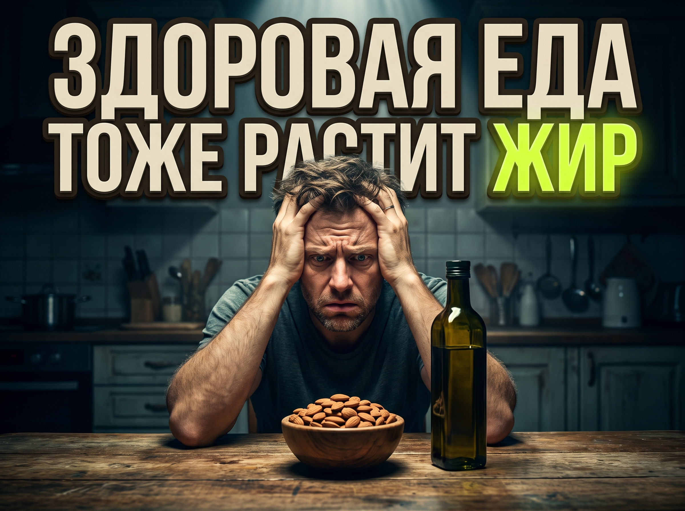

Почему ты набираешь вес на правильном питании. Главная ловушка здоровой еды и скрытые калории

Где пасутся скрытые калории? И что с ними делать.
Ты перешел на чистое питание, выбросил весь пищевой мусор и начал пристально следить за здоровьем. В холодильнике теперь лежат только органические продукты, свежие овощи, красная рыба и качественные растительные масла. Ты добросовестно жуешь зелень и отказываешься от пиццы на выходных. Но проходит месяц, ты встаешь на весы, а цифра не просто стоит на месте, она стала заметно больше. В этот момент хочется все бросить и сказать, что диеты придумали мошенники.
И вот тут кроется главная тайна, о которой постоянно молчат производители фитнес-продуктов. Дочитай этот текст до конца, и ты получишь точный ответ, почему полезная еда заставляет тебя набирать вес. Я покажу одну незаметную пищевую привычку, которая каждый день вливает в тебя сотни лишних калорий, и дам простой инструмент, как это исправить за один день.
Калория всегда остаётся калорией
Маркетологи пищевой индустрии годами продавали нам идею разделения еды на плохую и хорошую. Нам глубоко внушили, что от плохой еды люди мгновенно толстеют, а от хорошей обязательно и очень быстро худеют. Звучит вполне логично, да? А на деле все работает совершенно иначе. Наше тело вообще не понимает концепции чистого или грязного питания. Оно понимает только энергию, которая поступает внутрь каждый день. Если ты заливаешь в свой бак больше топлива, чем способен потратить за сутки, весь этот излишек неизбежно уходит в жировые запасы. И твоему организму абсолютно неважно, пришло это топливо из фермерского авокадо высшего сорта или из дешевого привокзального пирожка. Калория всегда остается калорией.
Энергетическая плотность: где живут скрытые калории
Но дальше начинается самое интересное, и мы подходим к разгадке нашей проблемы. Существует такое базовое понятие, как энергетическая плотность продукта. Это количество калорий, которое помещается ровно в ста граммах еды. Полезные растительные жиры здесь являются абсолютными рекордсменами. Сухая наука говорит нам, что один грамм белка или углеводов дает организму 4 калории, тогда как один грамм жира приносит сразу 9 калорий. Разница составляет больше чем в два раза. Из-за такой математики маленькая горсть грецких орехов, которую ты даже не заметил во время просмотра сериала, по своей калорийности абсолютно равна огромной тарелке вареного картофеля с внушительным куском куриной грудки. Только картофель с мясом дадут тебе плотную сытость на половину дня, а после горсти орехов ты пойдешь искать новую еду уже через час.
Засада первая: масло в салатах
Давай разберем конкретные засады, в которые попадает каждый второй худеющий человек. Первое место стабильно держит масло в овощных салатах. Ты нарезаешь огромную миску огурцов и помидоров, в которых от силы наберется 50 калорий. Это отличный объем для желудка. Но затем ты берешь бутылку дорогого оливкового масла прямого отжима и щедро поливаешь овощи. Три столовые ложки такого полезного масла незаметно добавляют в твою тарелку почти 400 калорий. Твой идеальный диетический салат за одну секунду превращается в калорийную бомбу, которая по энергетической ценности легко конкурирует с добротным двойным бургером.
Засада вторая: правильные перекусы
Второе место уверенно забирают так называемые правильные перекусы. Полки магазинов завалены протеиновыми батончиками, фитнес-печеньем без сахара и смесями сухофруктов. На упаковке большими буквами написано про огромную пользу и полную натуральность. Но если перевернуть обертку и внимательно посмотреть на состав, можно испытать настоящий шок. В одном маленьком спортивном батончике очень часто прячется от 250 до 350 калорий за счет добавления плотных ореховых паст, финикового сиропа и кокосовой стружки. Ты съедаешь его на бегу, не чувствуешь вообще никакого насыщения, а по калориям это равно полноценному плотному приему пищи.
Кейс из практики: 700 калорий из воздуха
Недавно у меня был клиент, который искренне не понимал причину своего долгого застоя. Он клялся, что питается абсолютно идеально и жестко держит нужный дефицит. Мы начали вести строгий дневник питания с точностью до каждого грамма, и тут тайна наконец раскрылась. Каждое утро к своей яичнице он добавлял половину крупного спелого авокадо, а вечером съедал две полные горсти кешью для улучшения работы мозга. Только эти два невероятно полезных продукта давали ему сверху почти 700 лишних калорий каждый божий день. Как только мы полностью убрали кешью и сократили авокадо до четвертинки, вес стремительно пошел вниз, а рельеф начал прорисовываться буквально на глазах.
Ты искренне думаешь, что проблема кроется в плохой генетике, возрастных изменениях или сломанном метаболизме. А по факту ты просто не видишь реальный объем поступающей энергии из-за наклеенного на продукты ярлыка пользы. Представь, что через пару недель ты начинаешь отслеживать эти жирные мелочи. Ты подходишь к зеркалу и впервые за долгое время видишь, как уходит неприятный отек, а живот становится плоским, потому что дефицит наконец-то стал реальным, а не просто воображаемым.
Что делать прямо сейчас
Что нужно сделать, чтобы сломать этот порочный круг.
- Прекрати лить масло на глаз: Купи специальный кулинарный спрей или всегда отмеряй масло строгой чайной ложкой.
- Купи кухонные весы: Взвесь один раз свою привычную порцию любимых орехов и посмотри на цифры в приложении — это здорово отрезвляет.
- Воспринимай напитки как еду: Любой кофе с молоком или смузи — это полноценный прием пищи, а не обычную воду.
Здоровая еда категорически необходима для нормальной работы суставов, качественной кожи и долголетия. Но для финальной цифры на весах решает исключительно количество.
Метафитнес
Больше прикладной механики тренировок и разборов питания без воды в моем Telegram канале.